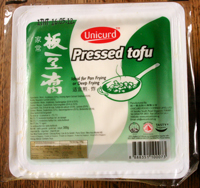

Tofu is misschien wel de meest bekende vleesvervanger. Het is zelfs een soort symbool voor het vegetarisme geworden. Toch is dit product vaak het onderwerp van spot en wordt het maar door enkelen naar waarde geschat.
Wat is tofu eigenlijk? Er bestaan verschillende soorten tofu (vaste, zachte, gerookte, gekruide, enz.). Het wordt steeds gemaakt door sojamelk te stremmen. Sojamelk wordt gemaakt van geweekte, gemalen en gekookte sojabonen. Aan dit "gefilterd sap" worden coagulanten (er bestaan verschillende soorten) toegevoegd waardoor het geheel een vaste structuur krijgt. Deze bereiding lijkt sterk op die van kaas. Daarom wordt tofu ook vaak "sojakaas" genoemd.
Tofu lijkt dus op kaas en kan in de supermarkt dan ook vaak in dezelfde afdeling worden teruggevonden. Toch bestaat er een groot verschil in gebruik. Tofu heeft van nature weinig smaak. Vergeleken met tofu heeft mozzarella evenveel smaak als gerijpte camembert met calvados! Tofu moet dus worden klaargemaakt. Er zijn immers veel mensen die tofu zonder meer hebben geproefd en hebben gezworen dit nooit meer te doen. Klaargemaakte tofu is echter een waardevol ingrediënt in een lichte, gevarieerde en gezonde keuken.
Vaste tofu (natuurlijk, gerookt of gekruid) kan rauw worden gegeten, bijvoorbeeld in salades. Hierbij moet de salade voldoende worden gekruid opdat de tofu wat meer smaak krijgt. Het beste resultaat wordt echter bekomen wanneer tofu gemarineerd en vervolgens gebakken wordt.
Zachte tofu of zijdetofu is verschillend. Het heeft meer de textuur van yoghurt en kan als dusdanig worden gebruikt. Zo kan zachte tofu dienen als basis voor dressings of als bindmiddel in bereide gerechten. Tussen vaste en zachte tofu bestaat er nog een uitgebreid gamma aan texturen die worden gebruikt in tal van gerechten, vaak in de Aziatische keuken.
Bij de aankoop is enige aandacht vereist om onaangename verrassingen te vermijden. Tofu wordt immers vaak gemaakt van genetisch gemodificeerde soja en in landen die de wetgeving inzake meststoffen en bestrijdingsmiddelen niet altijd in acht nemen. Daarom geniet biologische tofu altijd de voorkeur.